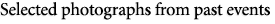
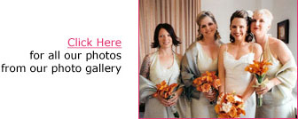

|
Call or email Carol Antraccoli for a consultation
415-333-8058 Email: Dudett@pacbell.net
The beauty and symbolism of flowers lend a special meaning to many of the most important occasions in our lives. Your wedding flowers are no exception. Performed properly they will enhance your dress, tie in your color themes, and compliment the appearance of your entire bridal party. Executed in a creative and artistic manner they can turn your reception into a magical moment, a sophisticated evening or a whimsical fairytale. Flowers truly create the mood and feel that you desire for your special day.
An Added Touch Flowers believes that your day should receive its full attention. That is why we do limited events. We also believe the flowers should be an expression of your taste and desires, a collaboration of ideas, styles and colors, to give you the wedding of your dreams. We believe that service is just as important as beautiful flowers, so from your complimentary consultation to the day of your event you will be our priority. I will personally select each flower for your special day, making sure they are the perfect hue and the highest quality. Nothing gives me greater pleasure than to have a bride exclaim that her bouquet is even more beautiful than she ever imagined or see her eyes well up with tears as she enters the reception site.
An Added Touch Flowers has been servicing the entire Bay Area and beyond for the past 16 years. We have a large selection of rental items: including candelabras, chuppahs, arches, ceremony urns, pedestals and many more. We also will coordinate linens, lighting, and any other rental items you may need.
|
|
|
|


Carol
We just wanted to thank you for making our wedding day so special. All the floral arrangements turned out beautifully...
Dear Carol,
Thank you so much for the absolutely wonderful job you did with our wedding flowers. I can't begin to describe how beautiful they were...
Carol,
Rob and I wanted to thank you so much for the incredible job you did on the flowers and candles. It was absolutely amazing!..
Read all testimonials
|
|
|
|
|